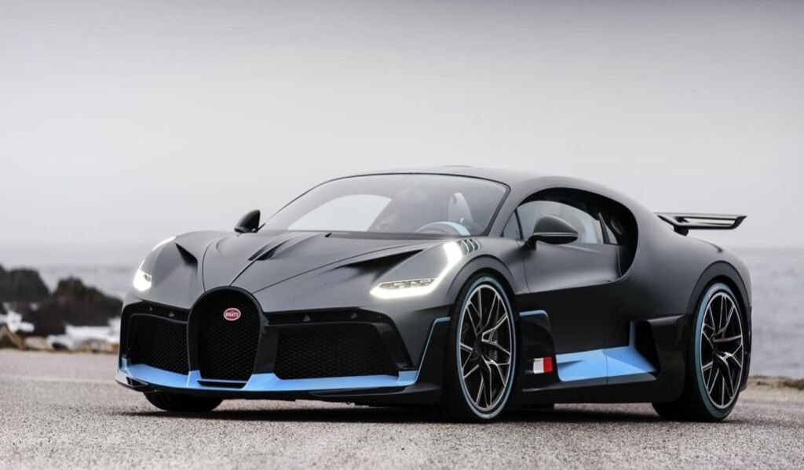
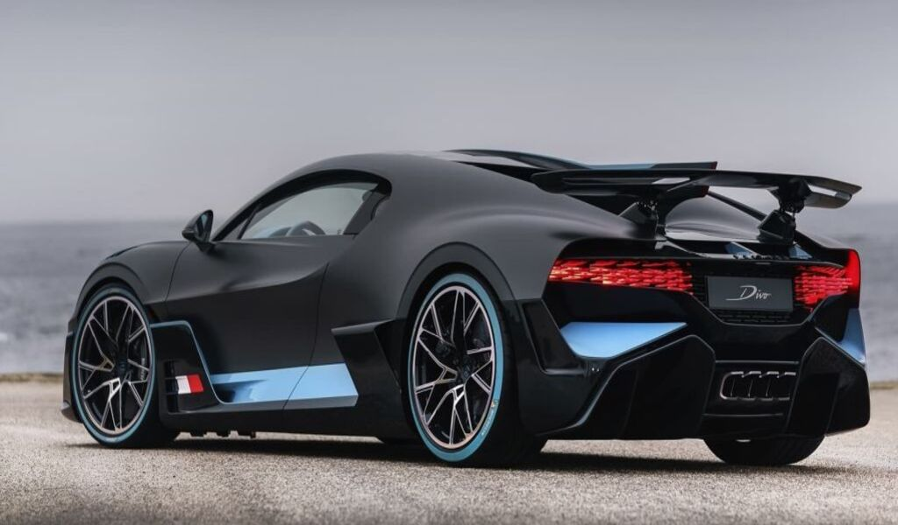
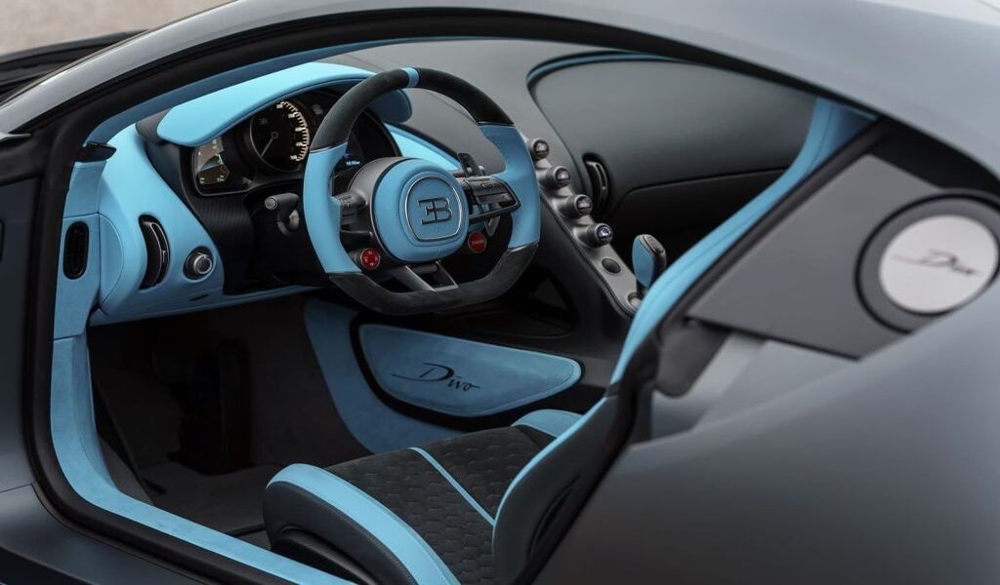
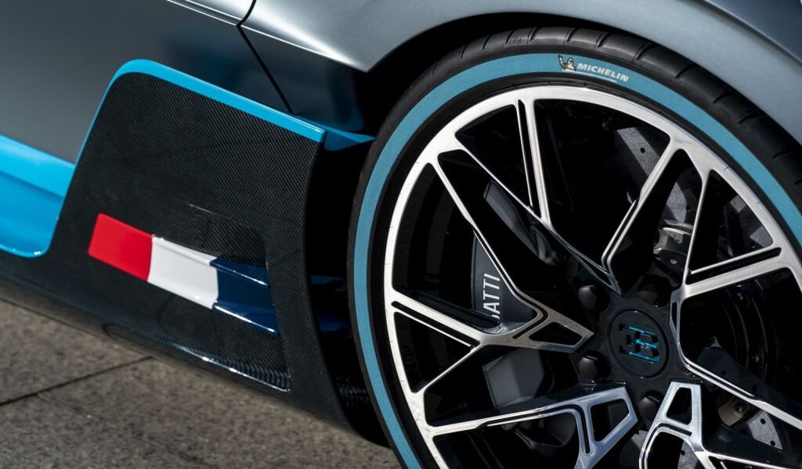
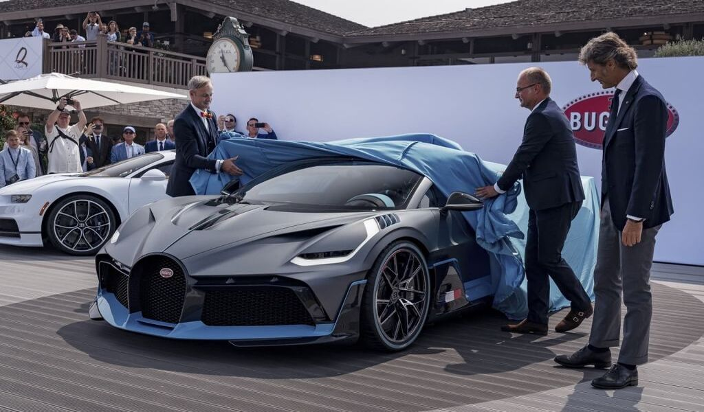
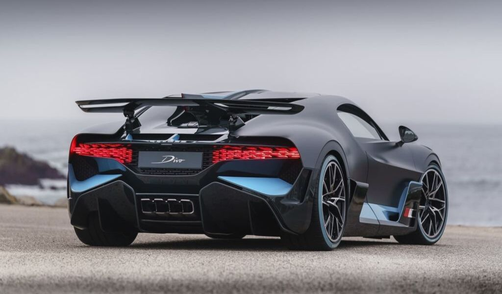

El Koenigsegg Jesko es el hiperdeportivo desarrollado por el fabricante sueco para dar relevo al Koenigsegg Agera. Se trata de un modelo lanzado oficialmente durante el salónd del automóvil de Ginebra de 2019 con una producción limitada a 125 unidades, todas ellas ya vendidas con un precio estimado de 2,5 millones de euros. Como sucesor material del Agera RS - la que fuese la especificación más radical del modelo - ofrece un planteamiento muy similar enfocado en las máximas prestaciones, sin embargo se trata de un coche completamente nuevo que no comparte con el Agera ningún elemento.
Bugatti Divo






El Bugatti Divo es un hiperdeportivo del que Bugatti sólo fabricará una tirada muy exclusiva limitada a 40 unidades (todas ellas vendidas antes de su presentación) a un precio de más de 5 millones de euros. El Bugatti Divo se construye sobre la base del Bugatti Chiron, pero disfruta de una carrocería diferenciada para conseguir un diseño muy radical. Cuenta con el mismo motor 8.0 W16 Quad-Turbo con 1.500 CV del Bugatti Chiron, pero busca ser más radical y eficaz en curva. Con su nombre, rinde homenaje al piloto francés Albert Divo, que a finales de los años veinte ganó en dos ocasiones en la Targa Florio, en las sinuosas carreteras de Sicilia. La masa total del Bugatti Divo se sitúa justo entre el Chiron y el Chiron Sport, y la carga aerodinámica adicional lleva la fuerza lateral máxima hasta 1.6 g a cambio de limitar la velocidad máxima a 380 km/h.